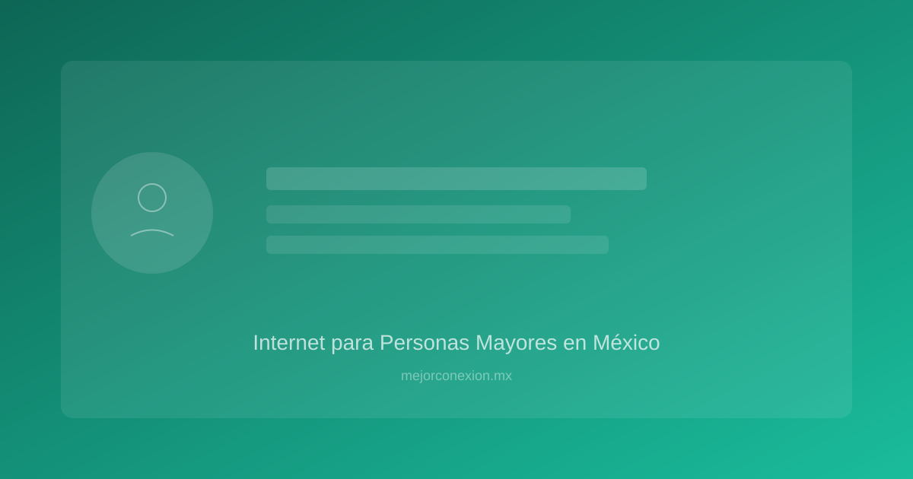

Guía Completa: Cómo elegir el mejor internet para personas mayores en México
En la era digital actual, la conectividad ha dejado de ser un lujo para convertirse en una herramienta esencial de salud, seguridad y socialización. Encontrar el internet para personas mayores adecuado no se trata solo de contratar el paquete más caro, sino de garantizar una conexión que sea estable, fácil de usar y, sobre tanto, segura. Para los dueños de casa en México que buscan cuidar de sus padres o abuelos, entender las opciones tecnológicas y las necesidades específicas de este grupo demográfico es el primer paso para cerrar la brecha digital y mejorar su calidad de vida.
En este artículo, exploraremos de manera práctica y detallada cómo configurar un entorno digital que fomente la autonomía de los adultos mayores, comparando tecnologías y ofreciendo consejos útiles para que la tecnología sea una aliada y no una fuente de frustración.
1. Los beneficios de la conectividad: Más allá del entretenimiento
Antes de hablar de cables y routers, debemos entender por qué es tan importante invertir en una buena conexión para nuestros adultos mayores. La tecnología, cuando se usa correctamente, ofrece beneficios tangibles en tres áreas críticas:
Conexión emocional y social
El aislamiento es uno de los mayores desafíos de la edad avanzada. Un internet robusto permite el uso de aplicaciones como WhatsApp, Facebook o Zoom, facilitando videollamadas que acortan distancias. Ver la cara de un nieto en tiempo real puede tener un impacto positivo directo en la salud mental y emocional del adulto mayor.
Telemedicina y salud preventiva
Hoy en día, muchas consultas médicas se realizan de forma remota. Contar con una conexión estable permite que los pacientes participen en consultas de seguimiento sin necesidad de desplazamientos peligrosos o incómodos. Además, el acceso a aplicaciones de recordatorio de medicamentos y portales de salud es mucho más fluido con un buen servicio.
Estimulación cognitiva y entretenimiento
El acceso a YouTube, plataformas de streaming (como Netflix o Disney+) y juegos de lógica o memoria son herramientas excelentes para mantener el cerebro activo. La capacidad de buscar tutoriales de cocina, aprender sobre historia o simplemente escuchar música de su época fomimos la curiosidad y la agilidad mental.
2. Comparativa de tecnologías: ¿Qué tipo de conexión necesita el hogar?
No todos los hogares en México tienen la misma infraestructura. Dependiendo de si vives en una zona urbana como la CDMX, Monterrey o Guadalajara, o en una zona más rural, tus opciones variarán.
| Tecnología | Ventajas para Adultos Mayores | Desventajas | Ideal para... |
|---|---|---|---|
| :--- | :--- | :--- | :--- |
| Fibra Óptica | Máxima estabilidad, ideal para videollamadas sin cortes. | Disponibilidad limitada en zonas rurales. | Zonas urbanas y hogares con múltiples dispositivos. |
| Internet Satelital | Cobertura en casi cualquier rincón de México. | Latencia alta (retraso en el audio/video) y clima sensible. | Zonas rurales o de difícil acceso. |
| Redes 4G/5G (Módem Fijo) | Instalación inmediata, sin cables complicados. | Puede ser más costoso si se consume mucho video. | Personas que no quieren esperar instalaciones técnicas. |
| DSL (Cobre) | Disponible en muchas zonas residenciales antiguas. | Velocidad lenta, se degrada con la distancia al nodo. | Uso básico (solo mensajes y lectura). |
¿Cuál elegir?
Si el objetivo es que el adulto mayor realice videollamadas sin que la imagen se con un "congele" o se escuche entrecortado, la fibra óptica es la opción ganadora. La estabilidad de la señal es crucial para evitar la frustración tecnológica. Si vives en una zona donde la infraestructura es limitada, un módem con tecnología 5G puede ser una alternativa muy sólida y fácil de configurar.
Para entender mejor cómo elegir la mejor opción según tu presupuesto y ubicación, te recomendamos leer nuestra guía sobre el mejor internet para casa en México 2026, donde analizamos los costos y servicios de los principales proveedores.
3. Configuración del hogar: Optimizando la cobertura Wi-Fi
Un error común es pensar que con solo contratar el servicio el problema está resuelto. Muchas veces, la señal llega bien al router, pero no llega a la habitación donde el adulto mayor pasa más tiempo.
El problema de los "puntos muertos"
Las paredes gruesas (comunes en muchas casas mexicanas) y los obstáculos metálicos pueden bloquear la señal. Para solucionar esto, considera las siguientes opciones:
- Sistemas Wi-Fi Mesh (Red de Malla): Esta es la recomendación número uno para dueños de casa. En lugar de un solo router potente, utilizas varios nodos que se comunican entre sí para crear una sola red uniforme en toda la casa. Esto evita que el abuelo tenga que "perseguir" la señal por toda la propiedad.
- Repetidores de señal: Son más económicos, pero menos eficientes que el Mesh. Pueden crear micro-cortes que resultan molestos durante una llamada.
- Ubicación estratégica: El router debe estar en un lugar elevado, central y sin obstáculos físicos. Evita guardarlo dentro de muebles de madera o cerca de microondas.
Simplificación de la red
Para un adulto mayor, la complejidad es el enemigo.
- Nombre de red único: Asegúrate de que no haya múltiples redes (ej. "Casa_2G" y "Casa_5G") que puedan confundirlos. Configura el sistema para que todo sea una sola red inteligente.
- Contraseña sencilla pero segura: Aunque debe ser robusta, intenta que sea algo que ellos puedan recordar o que esté anotado de forma segura y visible en un lugar que ellos manejen.
4. Seguridad Digital: Protegiendo a nuestros mayores de estafas
Lamentablemente, los adultos mayores son blancos frecuentes de ciberdelincuentes debido a su menor familiaridad con las nuevas tácticas de engaño. La seguridad en internet para abuelos debe ser una prioridad en la configuración del hogar.
Prevención de Phishing y Vishing
El phishing (engaño por correo o mensaje) y el vishing (engaño por llamada telefónica) son muy comunes en México.
- Configuración de filtros: Utiliza servicios de DNS que bloquequen automáticamente sitios web maliciosos o de contenido fraudulento.
- Educación constante: Más que tecnología, lo que necesitan es conocimiento. Enséñales que ningún banco o institución de gobierno les pedirá claves por WhatsApp o llamadas telefónicas.
Control de acceso y antivirus
- Instalación de Antivirus: No basta con el que viene por defecto en Windows. Instala una solución robusta que sea "silenciosa" (que no llene la pantalla con anuncios de "limpieza de sistema").
- Cuentas de usuario limitadas: Si ellos usan una computadora compartida, crea una cuenta de "Usuario Estándar" y no de "Administrador". Esto evita que instalen accidentalmente software malicioso o programas no deseados.
El uso de la tecnología como escudo
Configurar un router moderno que incluya funciones de control parental o de seguridad avanzada puede ayudar a filtrar contenido inapropiado o sitios de publicidad engañosa que suelen conducir a estafas.
5. Guía práctica: Checklist para una experiencia digital sin estrés
Si estás ayudando a un adulto mayor a modernizar su conexión, sigue estos pasos prácticos:
- [ ] Evaluación de necesidades: ¿Solo usa WhatsApp o ve Netflix en 4K? Define la velocidad necesaria.
- [ ] Prueba de cobertura: Camina por la casa con un celular mientras reproduces un video. Si se detiene, necesitas un sistema Mesh.
- [ ] Simplificación de dispositivos: Si es posible, utiliza tablets con pantallas grandes y sistemas operativos intuitivos (como iPadOS o Android simplificado).
- [ ] Configuración de "Botón de Pánico" digital: Enséñales a quién llamar (tú o un técnico de confianza) si ven algo extraño en la pantalla.
- [ ] Gestión de contraseñas: Utiliza un gestor de contraseñas en sus dispositivos, pero mantén una copia física segura en casa para emergencias.
Ejemplo de caso práctico
Don Roberto vive en una casa de dos pisos en Querétaro. Su conexión original era de cable coaxial (DSL) y sufría cortes constantes en sus videollamadas con su familia en Canadá. Al cambiar a un plan de Fibra Óptica y añadir un nodo Mesh en su habitación, la frustración desapareció. Ahora, además de sus llamadas, utiliza YouTube para aprender carpintería, todo sin preocuparse por la conexión.
Conclusión: La tecnología como puente, no como barrera
Implementar un buen plan de internet para personas mayores es una inversión en su bienestar emocional y autonomía. Al elegir la tecnología correcta, optimizar la cobertura de tu hogar y establecer capas de seguridad, estás construyendo un puente que les permite mantenerse conectados con lo que más aman: su familia y sus intereses.
No permitas que la brecha digital los aísle. Empieza hoy mismo revisando la calidad de la conexión en tu hogar y considera las mejoras que pueden transformar su día a día.
¿Estás buscando mejorar la conectividad de tu hogar en México? No tomes una decisión a ciegas. Consulta nuestra comparativa actualizada de los mejores proveedores y planes disponibles para asegurar que tu inversión valga la pena. ¡Haz clic aquí para leer nuestra guía definitiva sobre el mejor internet en México!